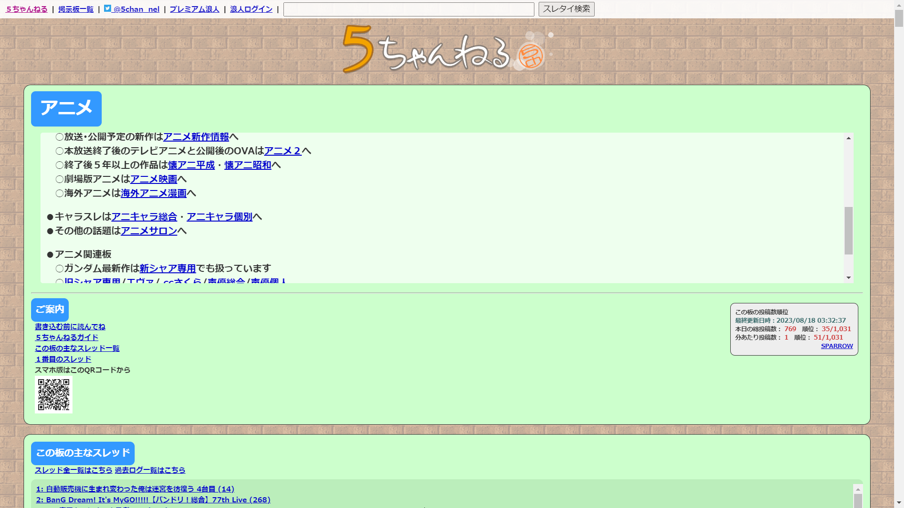
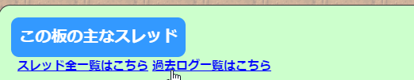
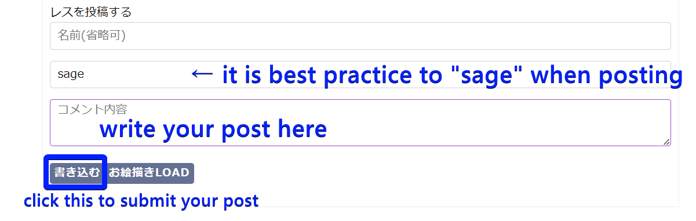
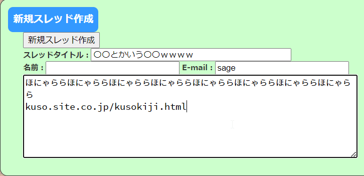

Cara menggunakan 5ch¶

2channel (Bahasa Jepang: ２ちゃんねる) (Nama baru: ５ちゃんねる) adalah papan buletin teks anonim Jepang. Anda bisa menganggapnya sebagai versi Jepang dari sesuatu di antara Reddit dan 4chan, dengan basis pengguna yang lebih beracun daripada Reddit dan tingkat moderasi yang bervariasi. Anda bisa menggunakannya untuk menghabiskan waktu alih-alih melihat situs-situs berbahasa Inggris. Desain situs ini sangat dipertanyakan menurut standar saat ini, dan saya akan terus menyebutnya "buruk" dalam artikel ini. Desain situs yang buruk, dikombinasikan dengan kurangnya keramahan pengguna, membuat situs ini sangat sulit digunakan, terutama bagi orang yang masih belajar bahasa Jepang. Artikel ini akan mencoba menjelaskan cara menggunakan 5ch di browser Anda.
Jadi apa sebenarnya nama situs ini?¶
"にちゃんねる" adalah nama yang dikenal luas. Situs ini berganti nama menjadi 5channel (ごちゃんねる) karena beberapa keadaan. Banyak pengguna masih menyebut situs ini dengan nama lamanya, namun untuk mengurangi kebingungan, saya akan menyebutnya sebagai 5ch. Namun, ada situs lain yang dikenal sebagai Futaba Channel, yang dikenal sebagai 2chan, yang tidak terkait dengan 2channel/5channel. Sangat membingungkan.
URL¶
Halaman Depan¶

Apa! Bagian mana dari desain situs yang buruk, Anda tanya? Pertama, tangkapan layar itu sebenarnya diambil dengan pemblokir iklan yang diaktifkan. Situs tanpa pemblokir iklan memiliki terlalu banyak iklan untuk menjadi pengalaman yang menyenangkan. Dan kedua, desain situs sebenarnya sangat tidak konsisten, desain situs berubah di berbagai halaman. Hanya halaman depan yang terlihat bagus, lol.
Saya merekomendasikan uBlock Origin (Chrome | Firefox) sebagai pemblokir iklan. Ini adalah satu-satunya yang berfungsi dengan baik sebagai pemblokir iklan.
Halaman depan menampilkan thread populer dari ニュース速報+ (papan berita) dan 野球実況板 (papan 実況 baseball).
Meskipun halaman depan memiliki konten yang cukup biasa, sebenarnya ada banyak sekali papan berbeda untuk minat yang berbeda. Anda dapat mengakses daftar papan dengan mengklik tombol 掲示板 di kiri atas.
Papan¶

Ada BANYAK papan, lebih mirip dengan subreddit Reddit daripada papan di 4chan.
Papan memiliki banyak kategorisasi di 5ch, ini berarti Anda hanya dapat membaca hal-hal yang Anda minati, tetapi juga dapat mengakibatkan banyak papan menjadi mati, karena kategorisasi terkadang terlalu teliti.
Anda mungkin ingin mencoba menggunakan Ctrl+F untuk mencoba menemukan sesuatu yang terkait dengan minat Anda. Anda dapat mencoba memasukkan kata kunci (tentu saja, dalam bahasa Jepang!) ke dalam kotak pencarian, pasti ada thread tentang itu, dan dari sana Anda dapat mempelajari papan mana yang cocok untuk jenis minat Anda.
Ada halaman yang menampilkan tautan ke setiap papan tunggal dalam satu halaman: 掲示板リスト.
Papan yang sering saya lihat secara pribadi adalah ラブライブ！ dan 声優.
Halaman Papan¶

Kotak pertama dari halaman papan berisi aturan dan info tentang papan tersebut.

Anda dapat melihat daftar thread di kotak berikutnya. Inilah cara Anda akan menemukan thread. Angka dalam tanda kurung setelah nama thread adalah berapa banyak tanggapan yang dimiliki thread tersebut.
Jika Anda menggulir lebih jauh, Anda dapat melihat pratinjau thread terbaru yang di-bump. Ini akan menampilkan posting pertama (OP), dan 50 posting terakhir. "レス" mengacu pada berapa banyak tanggapan yang dimiliki thread. "CP" (click point?) mengacu pada seberapa populer thread saat ini. Angka yang lebih tinggi berarti lebih populer. (Tampilan thread terbaru yang di-bump) Anda perlu mengklik 全部読む untuk melihat seluruh thread.
Ketika Anda mengklik thread melalui daftar thread, secara default 5ch akan menampilkan posting pertama dan 50 posting terakhir. Anda perlu mengklik 全部, atau menghapus /l50 dari URL untuk melihat seluruh thread.

Halaman Khusus Daftar Thread¶
Ada halaman khusus untuk setiap papan di mana Anda dapat melihat daftar semua thread, tanpa tambahan lainnya. Anda dapat mengaksesnya dengan mengklik スレッド全一覧はこちら di bagian atas daftar thread, atau dengan mengedit URL untuk menyertakan subback.html di akhir.

Tampilan default tidak terlalu bagus, tetapi Anda harus mengklik 表示スタイル切替 dan mendapatkan tampilan yang Anda sukai.
Tautan Imgur¶
Anda mungkin memperhatikan banyak orang memposting tautan Imgur. Ini karena 5ch adalah papan buletin teks yang tidak mendukung pengunggahan gambar. Satu-satunya cara untuk berbagi gambar adalah menggunakan host gambar eksternal.
Ada ekstensi browser yang bertujuan untuk meningkatkan pengalaman 5ch yang menampilkan fitur menyematkan gambar dan tweet. Yang saya gunakan secara pribadi adalah 5chutil.
Pembaruan Desember 2023: Imgur telah mulai menghapus gambar yang berisi konten 18+ dan gambar dari pengguna yang tidak terdaftar, jadi beberapa pengguna 5ch telah beralih ke xxup.org dan catbox.moe untuk hosting gambar.
Tanggapan¶
Tanggapan bekerja hampir sama seperti balasan di situs seperti 4chan. Tanggapan tertua ditampilkan terlebih dahulu, dan yang terbaru ditampilkan terakhir.
Namun, sementara balasan di thread 4chan dihitung terhadap semua balasan di seluruh thread di seluruh papan (inilah mengapa balasan memiliki angka yang sangat tinggi), tanggapan di thread 5ch dihitung terhadap berapa banyak tanggapan yang ada dalam satu thread itu.
Di 5ch, cara orang menanggapi posting lain adalah dengan merujuk ke nomor dengan >>. Misalnya, membalas posting pertama akan menjadi >>1, membalas posting ke-19 akan menjadi >>19.
Di 5ch, thread akan secara otomatis DAT落ち ketika mencapai 1000 tanggapan. Anda dapat melihat thread yang diarsipkan tersebut di 過去ログ. Thread yang diarsipkan tidak dapat dibalas.
過去ログ¶
過去ログ 5ch adalah tempat di mana thread yang DAT落ち'd pergi. Anda dapat melihat 過去ログ dengan mengklik tombol 過去ログ一覧はこちら di bagian atas daftar thread.

Anda dapat mengunjungi halaman web 過去ログ untuk mencari thread lama yang diarsipkan terlalu baru untuk diindeks oleh Google.
PEMBARUAN PENTING OKTOBER 2023: Setelah periode serangan DDoS, thread 過去ログ tidak lagi dapat dilihat karena kode kesalahan 522.
Pembaruan Desember 2023: Banyak thread masih tidak dapat dilihat. Tidak diketahui apa yang menyebabkan hal ini karena sudah 2 bulan tanpa perbaikan.
Posting¶
BARU: Sistem DONGURI¶
Sebagai tindakan pencegahan troll dan spam, pengguna diharuskan untuk menanam biji ek dan menunggu sebelum mereka dapat memposting.
Anda dapat melakukan ini dengan mengetik !donguri di kolom 名前 dan memposting apa saja di thread mana pun.
Anda perlu mengulangi ini pada setiap perangkat/browser/aplikasi berbeda yang Anda gunakan untuk mengakses 5ch.

Setelah itu, Anda akan mendapatkan pesan kesalahan yang memberi tahu Anda bahwa biji ek (donguri) telah ditanam. Anda akan dapat memposting setelah beberapa menit berlalu.
Anda dapat memposting di 5ch dengan menggulir ke bagian paling bawah thread dan mengetik di kotak teks.

Saat memposting, pastikan apa yang Anda posting tidak melanggar hukum dan tidak menyebabkan masalah bagi orang lain. Anda dapat dengan mudah diblokir karena trolling di 5ch dan sangat tidak menyenangkan mencoba untuk membatalkan blokir atau menghindari blokir Anda!
Praktik terbaik adalah sage! saat memposting!
Anda dapat memulai thread baru dengan pergi ke halaman papan dan menggulir ke bagian bawah di mana tertulis 新規スレッド作成.

Budaya Posting¶
Karena posting bersifat anonim, posting mungkin menjadi beracun. Orang mungkin saling melontarkan hinaan. Saya pikir itu tidak ada apa-apanya dibandingkan dengan 4chan, meskipun demikian. Juga, ini sangat bervariasi tergantung pada papan mana Anda memposting. Papan seperti アニメ memiliki moderasi yang baik dan tidak benar-benar menjadi beracun. Di sisi lain, tempat sampah seperti ニュー速(嫌儲) hampir selalu menjadi bagian bawah internet Jepang.
Orang-orang dapat dan akan merespons secara negatif terhadap posting berkualitas buruk yang Anda buat dan thread yang Anda buat, dan akan ada haters di mana-mana yang mengkritik hal-hal yang Anda sukai, penting untuk tidak menanggapi respons negatif ini dengan serius, dan belajar untuk mengatasinya.
Cara memposting di luar Jepang¶

IP non-Jepang tidak dapat memposting di 5ch.
5ch sangat ketat tentang alamat IP mana yang dapat memposting di 99% papan (Anda dapat memposting secara bebas di papan 大使館 dan Anarchy).
Pembaruan Oktober 2023: Anda tidak lagi dapat memposting di papan mana pun di 5ch dengan IP asing tanpa 5ch premium.
Anda dapat melihat 5ch dengan baik di luar Jepang, namun Anda hanya dapat memposting dengan ISP Jepang dan operator seluler yang disetujui. Ini berarti VPN biasa tidak berfungsi, karena ISP juga perlu disetujui.
Namun masih ada cara untuk mengatasi pembatasan posting, tetapi bisa menjadi rumit.
Metode 1: VPN alamat IP Residensial¶
Ini adalah satu-satunya cara yang pernah saya gunakan untuk memposting di 5ch, namun bisa sulit untuk mendapatkannya, dan tergantung pada layanan yang Anda gunakan, Anda akan terus-menerus bermain gacha dan melihat alamat IP mana yang belum digunakan oleh orang lain di 5ch dan sudah diblokir. Ini hampir seperti permainan kucing-kucingan dengan moderator 5ch.
Tuxler¶
Tuxler adalah layanan VPN yang memungkinkan Anda menggunakan alamat IP residensial. Ini berfungsi cukup baik ketika Anda mengetahui cara menggunakannya. Saya sarankan Anda mengunduh aplikasi Windows, bukan ekstensi Chrome. Aplikasi Windows Tuxler.
Ketika saya mencoba terhubung langsung ke alamat lokasi Jepang dalam mode Residensial, itu tidak berhasil. Namun, saya menyadari bahwa perangkat lunak tersebut memiliki bug dan ada cara untuk mengatasinya. Anda perlu terlebih dahulu terhubung ke lokasi Datacenter, KEMUDIAN lokasi Residensial. (Anda dapat menumpuk koneksi.)
Jadi langkah-langkahnya adalah sebagai berikut,
1. Hubungkan ke lokasi Datacenter terdekat, (Prancis untuk saya, karena saya berada di Inggris.)
2. Kemudian beralih ke tab Residensial dan pilih Jepang.
3. Ketika bendera di bagian bawah berubah menjadi Jepang, Anda tahu itu berhasil.
4. Coba akses ipleak.net untuk melihat apa yang ditampilkan sebagai ISP Anda. Seharusnya seperti KDDI, NTT, au, SoftBank, Docomo dll.
5. Ketika Anda mencapai batas harian, hubungkan ke VPN residensial lain terlebih dahulu sebelum terhubung. (itu mengingat IP asli Anda)
PERINGATAN: Tuxler memungkinkan orang lain menggunakan alamat IP Anda sebagai VPN residensial juga. Pastikan Anda menutup aplikasi sepenuhnya (hilang dari ikon taskbar dan Task Manager sepenuhnya) ketika Anda selesai menggunakannya.
筑波vpn¶
Juga dikenal sebagai SoftEther, atau VPN Gate. Demi kesopanan terhadap para kontributor, saya tidak akan membahas secara detail, tetapi ini juga merupakan opsi.
Proxy Residensial Khusus¶
Ini adalah opsi yang cukup mahal. Ada penyedia proxy yang ditujukan untuk orang yang melakukan web scraping yang menyediakan proxy residensial yang tidak terdeteksi. Banyak dari penyedia ini juga memiliki proxy residensial lokasi Jepang. Pendekatan teraman dan paling andal untuk memposting di 5ch di luar Jepang adalah ini, tetapi bisa cukup mahal. Pastikan Anda tidak membeli "ISP Proxy"! Ini hanya IP pusat data dengan ISP dummy yang terdaftar. Anda membutuhkan proxy residensial atau seluler.
Metode 2: Beli ＵＰＬＩＦＴ¶
Pembaruan November 2023: 5ch ＵＰＬＩＦＴ (sebelumnya dikenal sebagai 浪人) adalah seperti Premium 5ch; Anda memiliki lebih banyak keuntungan seperti kemampuan spamming yang ditingkatkan dan Anda dapat memposting dari luar Jepang dan dengan VPN. Dulu ini hanya mengizinkan kartu kredit/debit Jepang, namun pergeseran prosesor pembayaran mereka ke Stripe telah membuatnya dapat dibeli oleh orang tanpa kartu Jepang. Harganya mulai dari $4 untuk 1 bulan. Namun, pastikan Anda menonaktifkan "自動更新" sebelum membeli! Sepertinya tidak ada cara lain selain mengirim email kepada mereka untuk menghapus detail pembayaran Anda. Jadi jangan centang kotak itu.
Ini adalah cara terbaik untuk memposting di 5ch di luar Jepang!!

Beginilah seharusnya tampilan email dengan detail login Anda setelah pembelian.
Template email untuk meminta penghapusan detail pembayaran jika 自動更新 dibiarkan aktif
Subjek: 自動更新の解除とお支払い方法の削除についてのお願い
おはようございます。
この度は、購入手続き中に「自動更新」を誤って有効にしてしまったため、その解除をお願いしたくメールを差し上げました。5ch UPLIFTサービスは引き続き利用させていただく予定ですので、自動更新機能のみを停止していただけますと助かります。
また、可能であれば、私の登録されているお支払い方法も削除していただけないでしょうか。
購入確認のメールは、以下の通りです。
[Masukkan email konfirmasi pembelian yang Anda terima]
お手数をおかけして申し訳ありませんが、ご対応いただけますと幸いです。 どうぞよろしくお願いいたします。
専用ブラウザ Browser khusus 5ch¶
Biasanya tidak disarankan untuk menggunakan browser web untuk menggunakan 5ch. Ini karena 5ch bekerja dengan Anda (klien) meminta data (.dat) thread dan server membuat halaman web HTML untuk Anda. Ini dapat menyebabkan beban tambahan pada server. Itulah mengapa browser khusus 5ch direkomendasikan, karena mereka dapat menampilkan thread dengan cara yang lebih alami untuk .dat thread.
Beberapa papan bahkan memiliki pembatasan di mana Anda hanya dapat memposting pada browser khusus.
Kerugian utama dari ini bagi pelajar bahasa Jepang adalah Anda tidak dapat menggunakan Yomichan di dalamnya.
Browser khusus 5ch yang direkomendasikan: Windows: Siki Android: Chmate iOS: Thread Master
Meningkatkan pengalaman browser web 5ch: 5chutil¶
Anda dapat meningkatkan pengalaman browser web 5ch menggunakan ekstensi 5chutil. Chrome (muat unzipped) Firefox
Ini memiliki banyak peningkatan kualitas hidup yang berguna. Termasuk:
- Tampilan daftar thread yang ditingkatkan, menampilkan pengurutan berdasarkan nama, jumlah tanggapan(レス), CP(勢い)(click point) dan tanggal.
- Embed Imgur dan Twitter
- Balasan dari satu pengguna dapat ditampilkan dalam daftar ketika Anda mengarahkan kursor ke angka di sebelah nama mereka.
- Balasan yang mencakup beberapa balasan dapat ditampilkan dalam daftar ketika Anda mengarahkan kursor ke >>.
- Tambahkan "Kata NG" dengan menyorot teks dan mengklik tombol. Ini dapat menyaring hal-hal yang tidak ingin Anda lihat.
- Dapat menyembunyikan balasan dari poster yang tidak Anda sukai dengan mengklik + di sebelah ID mereka.
Cara yang direkomendasikan untuk mencari di 5ch¶
Jika Anda ingin mencari thread aktif dan diarsipkan, dan juga konten thread, saya sarankan menggunakan Google dengan istilah pencarian Ini buruk di tahun 2024. Cara terbaik sekarang adalah menggunakan find.2ch.sc. 2ch.sc adalah situs cermin dari 5ch.net, yang dimiliki oleh pemilik sah 2channel, Hiroyuki Nishimura. Thread dan tanggapan di sini yang memiliki @net di sebelahnya dicerminkan dari 5ch.net, dan Anda dapat dengan mudah menemukan thread yang sesuai di situs 5ch.net.site:5ch.net <kata kunci>.
Kotak pencarian di situs tersebut cukup baik untuk mencari judul thread dari thread aktif.
結局 Tidak ada gunanya menggunakan 5ch?? / Pengenalan まとめサイト¶
5ch dapat memiliki banyak posting menarik, namun banyak thread mungkin クソスレ (thread sampah) dan banyak tanggapan dalam thread mungkin クソレス (tanggapan sampah). Juga bisa sulit untuk menemukan hal-hal di 5ch.
Di sinilah まとめサイト berperan. Situs-situs ini mengambil thread menarik dan hanya tanggapan yang menarik, dan menempatkannya di situs pihak ketiga. Situs-situs ini juga biasanya khusus hanya memposting tentang satu topik. Misalnya, ada situs matome Love Live! 5ch yang mengambil thread dari papan ラブライブ！. Ini ピコピコ通信, sebuah まとめサイト yang memposting thread dari papan 5ch terkait video game. Ini アルファルファモザイク yang lebih seperti まとめサイト umum.
Menurut pendapat saya, まとめサイト adalah alternatif Jepang yang sebenarnya untuk menggulir tanpa tujuan sesuatu seperti Reddit. Anda bisa menghabiskan berjam-jam terhibur hanya dengan melihat まとめサイト. Ada まとめサイト untuk hampir semua hobi / minat, cukup cari di Google. Anda dapat melihat daftar rekomendasi まとめサイト di sini: 【完全版】おすすめまとめサイト30選！2chなどジャンル別に調査！
Papan 5ch yang terkenal¶
- なんでも実況J
- なんでも実況G
- ニュー速VIP
- ニュー速(嫌儲)
- 東アジアニュース+
- なんでもあり
- 難民
- ハード・業界
Versi NSFW (BBSPINK) dari ニュー速 dan なんでもあり hanya dapat diakses dengan alamat IP Jepang. Sebagian besar BBSPINK juga hanya dapat diakses dengan alamat IP Jepang.
Talk.jp¶

URL: https://talk.jp/
Talk.jp adalah spin off dari 5ch yang dibuat baru-baru ini karena perselisihan antara pemilik 5ch yang buruk dan pemilik pengembang 5ch専用ブラウザ paling populer, Jane Style. Menanggapi hal ini, pengembang Jane Style menciptakan Talk.jp dan menghapus dukungan 5ch dari Jane Style, dan menjadikannya Talk.jp専用ブラウザ. Jane Style adalah 5ch専用ブラウザ yang populer, yang berarti semua orang yang mengunduh pembaruan tidak lagi akan menjelajahi 5ch, tetapi Talk.jp. Dengan demikian, ini tidak benar-benar mencuri banyak lalu lintas dari 5ch.
Talk.jp memiliki papan 5ch yang paling populer, dan menampilkan desain web yang lebih mudah digunakan.
Terminologi¶
スレ¶
Thread.
レス¶
Tanggapan.
板¶
Papan.
sage¶
Biasanya ketika Anda memposting di 5ch, thread akan naik ke atas papan. Anda dapat menghentikan ini dengan menempatkan sage di kolom Email saat memposting. Memposting tanpa sage dianggap tidak sopan sekitar 20 tahun yang lalu dan budaya sage sebagian besar tetap ada. Nama akan muncul ungu untuk pengguna yang memposting dengan sage.
自治¶
Pada dasarnya moderasi di 5ch. Papan yang dimoderasi dengan baik memiliki "自治スレ" di mana Anda mengeluh kepada moderator tentang dimoderasi.
実況¶
実況 di 5ch mengacu pada mendiskusikan suatu acara atau sesuatu saat sedang terjadi. Ini sering dianggap tidak sopan oleh pengguna 5ch, oleh karena itu sebagian besar papan melarang 実況 secara default. Papan yang memang mengizinkannya, memiliki 実況 dalam nama atau 実況OK/実況可 tertulis dalam aturan)
DAT落ち¶
Ketika sebuah thread menjadi diarsipkan dan Anda tidak dapat membalasnya. Sebuah thread mungkin DAT落ち ketika banyak thread baru dibuat lebih dari yang dapat ditampung papan, atau ketika thread mencapai 1000 balasan. Data thread 5ch disimpan dalam file .dat. Oleh karena itu, dat "jatuh".
VIP¶
Awalnya 20 tahun yang lalu, ini berarti papan yang mendapat perlakuan khusus, tetapi sekarang ini memiliki konotasi "penahanan" karena papan yang memiliki "VIP" dalam namanya sangat terkenal karena postingan mereka. Contohnya termasuk ニュー速VIP.
コテハン¶
5ch biasanya anonim, namun Anda dapat memposting dengan nama. Ini disebut コテハン.
トリップ/酉/鳥¶
Ini mirip dengan コテハン, tetapi トリップ dibuat oleh string karakter khusus yang seharusnya hanya Anda ketahui, yang menjadi string karakter lain, ini adalah トリップ Anda. Orang mungkin ingin memposting dengan トリップ ketika mereka ingin diidentifikasi secara khusus. Anda dapat membuat trip seperti ini: <nama> #<string acak>
垢版¶
Ejaan berbeda dari 垢BAN, atau アカウントBAN, namanya mungkin menyarankan itu melarang orang tetapi itu hanya tautan ke halaman donguri.
大砲¶
Ketika Anda memiliki UPLIFT, Anda dapat menjadi "Hunter" di situs. Anda dapat menembakkan "meriam biji ek" (どんぐりキャノン) pada seseorang yang Anda curigai sebagai troll. Ini dapat mengatur ulang level donguri mereka menjadi 0.
!extend:checked:vvvvv:1000:512¶
Ini adalah perintah yang dapat Anda gunakan di OP thread 5ch untuk mengaktifkan mode コテハン paksa. Ini adalah tindakan pencegahan troll karena berarti setiap anggota dapat diidentifikasi dengan "ﾜｯﾁｮｲ" diikuti oleh kode khusus. Papan yang dimoderasi dengan baik sering memiliki ini sebagai persyaratan untuk semua thread. Anda juga sering melihat ini dalam thread multi-bagian dengan template untuk OP. ID di 5ch diatur ulang ketika tanggal berubah atau ketika Anda memposting dari alamat IP yang berbeda, jadi ID saja tidak cukup. Orang akan memposting beberapa baris string !extend:checked:vvvvv:1000:512 untuk mengingatkan orang lain untuk tidak lupa mempostingnya ketika mereka membuat OP baru ketika thread dat落ち.
Versi yang lebih parah dari ini dengan lebih banyak v menampilkan alamat IP setiap poster (!extend:checked:vvvvvv:1000:512), namun ini lebih jarang.
狼¶
Papan モーニング娘
ﾜｯﾁｮｲ¶
Apa yang ditampilkan di sebelah nama Anda bersama dengan kode khusus ketika Anda memposting di thread yang memiliki !extend:checked:vvvvv:1000:512 di OP.
ROMる¶
(Read Only Memory). Mengintip. Ini adalah apa yang akan Anda lakukan.
AA¶
Seni ASCII. Juga termasuk seni Shift-JIS.
イッチ¶
Orang yang memposting OP. Dari ">>1"
人大杉¶
Pesan kesalahan yang kadang-kadang ditampilkan ketika Anda mencoba melihat sesuatu di 5ch/2ch過去ログ. Ini adalah versi 誤字 dari 人多過ぎ. Ini muncul ketika server yang mengubah .dat menjadi HTML di 過去ログ kelebihan beban.
アフィ / アフィカス¶
アフィ mengacu pada situs まとめ afiliasi. Situs-situs ini mengambil thread 5ch過去ログ dan menempatkannya di situs まとめ. Situs-situs ini memiliki iklan di mana-mana, dan mencoba untuk mendapatkan klik yang berarti mereka menghasilkan uang dari thread 5ch. Ini sangat dicela di kalangan pengguna 5ch, sedemikian rupa sehingga pemilik 5ch mempatenkan semua thread di situs web mereka, menjadikannya ilegal untuk memposting thread mereka di situs lain. Meskipun demikian, situs まとめ ada dan mereka tidak akan hilang. カス adalah kata Jepang yang berarti sesuatu seperti "sampah".